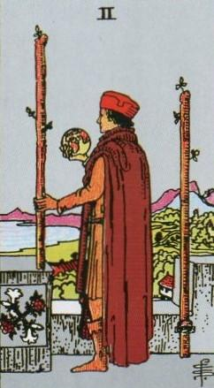
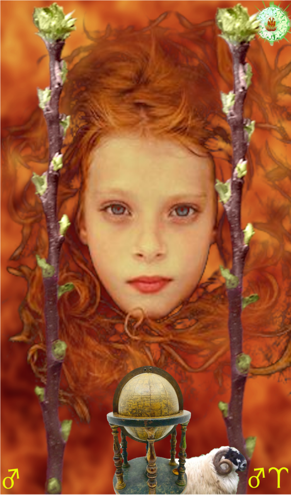
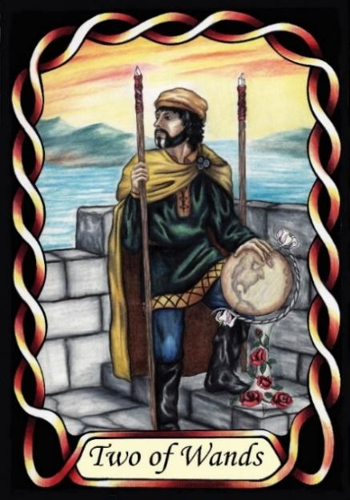

Two of Wands



Sign |
|
Oneself |
|
Sign Ruler |
|
Element |
Fire - Change |
Modality |
|
Symbol |
Ram |
Decan |
|
Decan Ruler |
|
Time |
Mar 21 - 30 |
The Child Aries I
This card represents an Apprentice developing their personality, struggling to navigate their surroundings, doubly ruled by Mars, with a tendency towards selfishness, bullying and violence in the early stages. Naivety is also present.
Following Goldschneider and RWS imagery, this card is interpreted as a child – first decan of the zodiac. Like a child, they have a great deal of innocence, and potential, and little experience. Thus, they are often confused by their world around them. They do not understand the subtleties of their elders
Like a child, they can behave badly when they are not happy. They may throw tantrums, and may resort to violence. If not supported, protected, and guided, they may develop a fear of abandonment, leading to attachment issues. They need to learn to reason first, before giving rein to their temper. Interpret this as the querent reacting badly to an unpleasant situation.
Goldschneider Personology
As children, these people have not yet formed masks or armour. They perceive the world around them though innocent, perhaps naïve, eyes. Their emotions are not masked, and can be easily hurt emotionally. Like any child, they have a strong attachment to close friends and family, and desire to be accepted by family and peers.
Waite Imagery
An Aries-one studies the world via a globe, from a distant castle top. He has little experience with the real world. One wand is shackled to the castle, indicating that he has not yet visited the rest of the world to experience it. Like a lonely child, perhaps an only child, they learn, but need protection. They have an outsider's perspective on the world
Summary
The Two of Wands represents the initial stages of self-discovery and exploration, as individuals navigate their surroundings and struggle to find their place. Doubly ruled by Mars, they exhibit impulsiveness, naivety, and a tendency towards selfishness. With guidance, they can learn to reason and temper their emotions, developing emotional intelligence and empathy.